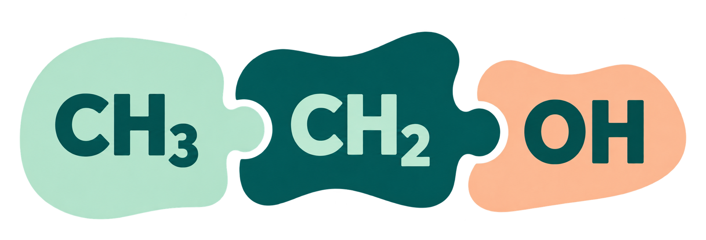

Namelecule — Αναφορά εργασιών
Νέες εργασίες μετά τη δημοσιευμένη αναφορά της 11/11, έως τις 12 Νοεμβρίου 2026
Γιάννης Σκένδρος · Κύρια εφαρμογή v55
964f884f2ca7, πλήρες σημείο επαναφοράς 7c705670fc9e. Αποθηκεύτηκαν 7392 αρχεία πηγών και 240 αρχεία ανάκτησης, με ελεγμένα ZIP/Git bundle και αντίγραφα σε δύο νέους χρονολογημένους φακέλους στον ίδιο υπολογιστή. Η τελική αναφορά και οι μεταγενέστερες αποδείξεις παράδοσης αποθηκεύονται με χωριστό χρονικό όριο. Η συνεδριακή δοκιμή και η προετοιμασία χωρίς Internet παραμένουν χωριστές εργασίες.Η νέα προσθήκη είναι το «Μοριακό παζλ»: ο μαθητής ξεκινά από το όνομα και κατασκευάζει τη δομή του μορίου. Παράλληλα βελτιώθηκαν ο χώρος σύνθεσης, οι οδηγίες και η επιστροφή πλακιδίων στο «Χτίσε το όνομα». Τα τρία παιχνίδια προσφέρουν διαφορετικές δραστηριότητες σύνδεσης δομής και ονόματος. Δεν έχει μετρηθεί μαθησιακό αποτέλεσμα.
1. Πιο άμεσος χειρισμός στο «Χτίσε το όνομα»
Η τράπεζα πλακιδίων βρίσκεται αμέσως κάτω από το πλαίσιο απάντησης. Στα μετρημένα παραδείγματα η απόστασή τους μειώθηκε περίπου από 370 σε 36 px σε μεγάλη οθόνη και από 261 σε 54 px σε στενή. Η είσοδος, η κατασκευή και η ανατροφοδότηση μετακινούν την προβολή προς το χρήσιμο περιεχόμενο, με σεβασμό στη μειωμένη κίνηση και στη χειροκίνητη παρέμβαση. Σε μικρές οθόνες τα διαθέσιμα πλακίδια γίνονται πιο συμπαγή και οργανώνονται σε τρεις στήλες. Η απάντηση και το όνομα διατηρούν τη μία γραμμή, με εσωτερική οριζόντια κύλιση όπου χρειάζεται. Έλεγχοι χώρου εργασίας · Έλεγχοι χειρισμού.
Οι οδηγίες εξηγούν χωριστά την προσθήκη με σύρσιμο ή κλικ, την αλλαγή σειράς με σύρσιμο ή επιλογή και βέλη, και την αφαίρεση με σύρσιμο έξω από το πλαίσιο, κουμπί ή Delete. Τα κουμπιά μετακίνησης και αφαίρεσης και το επιλεγμένο πλακίδιο διακρίνονται καθαρότερα. Στο κινητό οι πλήρεις οδηγίες ανοίγουν από το «Οδηγίες χειρισμού», ώστε να μένει διαθέσιμος ο χώρος κατασκευής. Οδηγίες και στενές οθόνες.
Διορθώθηκε συγκεκριμένη αιτία επαναφοράς του πλακιδίου στην απάντηση: ο προηγούμενος έλεγχος ορίων του ενσωματωμένου παιχνιδιού ακύρωνε ολοκληρωμένη απελευθέρωση πάνω στην κεφαλίδα της σελίδας. Πλέον το τοποθετημένο πλακίδιο που αφήνεται έξω από την ορατή απάντηση, αλλά μέσα στην τρέχουσα σελίδα, επιστρέφει στην αρχική του θέση στην τράπεζα. Διατηρούνται η αναδιάταξη μέσα στην απάντηση και οι έλεγχοι ακύρωσης. Οι δύο αποτυχίες κεφαλίδας αναπαράχθηκαν πριν τη διόρθωση· τα οκτώ αντίστοιχα σενάρια πέρασαν μετά. Απελευθέρωση έξω από το παράθυρο του browser και φυσική ακύρωση από το λειτουργικό δεν έχουν πιστοποιηθεί. Αιτία, επαλήθευση και όρια.
2. «Μοριακό παζλ»: από το όνομα στον συνεπτυγμένο τύπο

Ο μαθητής διαβάζει το όνομα, προσθέτει ομάδες CH₄, CH₃, CH₂, CH και C και συνδέει τις κατάλληλες ομάδες με απλούς δεσμούς μεταξύ ατόμων C. Υποστηρίζονται σύρσιμο, κλικ, πλήκτρα μετακίνησης, αφαίρεση και αναίρεση. Η κατασκευή ξεκινά κενή και αξιολογείται με τον «Έλεγχο». Το αρχικό σύνολο περιλαμβάνει οκτώ υπάρχοντα αλκάνια, χωρίς και με διακλαδώσεις.
Ο έλεγχος συγκρίνει τη συνδεσιμότητα και τα σταθερά υδρογόνα κάθε ομάδας με τον γράφο του μορίου προέλευσης· το πλήθος ατόμων C ή ο μοριακός τύπος μόνος του δεν αρκεί. Σωστή δομή γίνεται δεκτή ανεξάρτητα από τη θέση και τη φορά σχεδίασης. Δοκιμάστηκε και απορρίφθηκε διαφορετικό ισομερές με ίδιο μοριακό τύπο και ίδια πλήθη ομάδων CHₙ. Η υποστήριξη περιορίζεται στα συγκεκριμένα οκτώ αλκάνια· δεν αποτελεί γενικό εισαγωγέα αυθαίρετων MOL ή στερεοχημείας.
Χρησιμοποιείται το επιλεγμένο επίπεδο λογότυπο flat-v7 και η ίδια τυπογραφία τίτλου, στόχου και βοηθητικού κειμένου με τα ενσωματωμένα υπάρχοντα παιχνίδια. Το συμβολικό OH του λογοτύπου δεν επεκτείνει το σύνολο ασκήσεων πέρα από τα αλκάνια. Διορθώθηκαν δύο P2 της ανεξάρτητης ανασκόπησης: η πραγματική φόρτωση της κοινής γραμματοσειράς και η επικάλυψη κομματιών κατά την αλλαγή πλάτους. Η προσαρμογή του ολόκληρου σχεδίου διατηρεί ομάδες και δεσμούς. Αναφορά νέου παιχνιδιού · Κλείσιμο ευρημάτων.
3. Τρίτη επιλογή στις δύο στάσεις του μαθήματος
Στα βήματα 4 και 11 των αλκανίων ο μαθητής επιλέγει πλέον ανάμεσα σε «Συνεργείο ονομάτων», «Χτίσε το όνομα» και «Μοριακό παζλ». Για τη συνέχεια απαιτούνται τρία διαφορετικά σωστά μόρια στο ίδιο παιχνίδι, από το αντίστοιχο σύνολο χωρίς ή με διακλαδώσεις. Ο γονικός ελεγκτής επαληθεύει τη δομή του παζλ πριν προσμετρήσει επιτυχία.
Η μερική πρόοδος και το κερδισμένο ξεκλείδωμα διατηρούνται κατά την επαναφόρτωση. Μετά την ολοκλήρωση υπάρχουν συνέχεια στη θεωρία, νέα τριάδα στο ίδιο παιχνίδι ή επιστροφή στην επιλογή και των τριών παιχνιδιών. Η προαιρετική εξάσκηση διατηρεί το κερδισμένο ξεκλείδωμα. Το ενεργό JSON του σεναρίου διατηρεί τα ίδια δεδομένα. Στην πλήρη αποθήκευση επαληθεύτηκε και το αντίστοιχο τρέχον αντίγραφο στον φάκελο «αρχεία json». Αναφορά ενσωμάτωσης.
Η υποδοχή εξακολουθεί να έχει τις δύο υπάρχουσες απευθείας εισόδους παιχνιδιών. Το «Μοριακό παζλ» ανοίγει από τον απευθείας σύνδεσμο αυτής της αναφοράς και ως τρίτη επιλογή μέσα στο μάθημα· δεν προστέθηκε τρίτη είσοδος παιχνιδιού στην υποδοχή.
4. Τι ελέγχθηκε και τι παραμένει ανοικτό
Η χωριστή υποψήφια έκδοση δημοσίευσης πέρασε 19 λειτουργικούς ελέγχους Firefox. Μετά τη δημοσίευση, 83 δημόσια αρχεία ταίριαξαν με SHA-256 και η δημόσια εφαρμογή πέρασε 18 λειτουργικούς ελέγχους. Καταγράφηκαν τρεις απορρίψεις cookies analytics και δύο μηνύματα αποκλεισμού iframe του εξωτερικού tracker JSmol, χωρίς παρατηρημένη εξαίρεση παιχνιδιού. Η προγενέστερη απόπειρα που σταμάτησε στον χρόνο φόρτωσης εικόνας διατηρείται ως ελλιπής δοκιμή. Δημόσια λειτουργική δοκιμή.
Στο αυτοτελές παζλ η τελική εκτέλεση του Developer ολοκλήρωσε 244 ελέγχους διεπαφής και 92 της μηχανής· οι διορθώσεις γραμματοσειράς και προσαρμογής είχαν άλλους 84 στοχευμένους ελέγχους. Ο ανεξάρτητος Chemistry Validator εκτέλεσε 225 ελέγχους στη μνήμη. Ο Reviewer επαλήθευσε τις τελικές πηγές και τις αποδείξεις, με 388 ανεξάρτητους ελέγχους της προσαρμογής μετά τις διορθώσεις.
Για την ενσωμάτωση, η τελική εκτέλεση του Developer πέρασε 77 ελέγχους, με πραγματικές κατασκευές και στα δύο βήματα και μετάβαση 4→11→12. Προγενέστερη μη ολοκληρωμένη εκτέλεση διατηρεί 79 επιτυχημένους ελέγχους για λανθασμένη απάντηση, επαναφορά μερικής/κερδισμένης προόδου, προαιρετική τριάδα και επιλογή παιχνιδιών. Οι αποτυχημένες απόπειρες οδηγού δοκιμών διατηρούνται με τα χρονικά τους όρια. Ο ανεξάρτητος Reviewer εκτέλεσε 160 ελέγχους στη μνήμη και εξέτασε χωριστά την τελική απόδειξη browser, χωρίς ανοικτά ευρήματα στο αντικείμενο. Οι εκτελέσεις browser παραμένουν στοιχεία του Developer, όχι ανεξάρτητη επανάληψη από τον Reviewer. Κάλυψη εκτελέσεων · Τελική ανεξάρτητη επαλήθευση.
5. Core, upstream και επόμενο σημείο ελέγχου
Δεν έγιναν αλλαγές σε core.js ή σε κανένα από τα 11 αρχεία core έκδοσης κατά τη σημερινή συνεδρία. Δεν έγινε νέα ενσωμάτωση του upstream. Η τελευταία πραγματικά συγχρονισμένη αναθεώρηση παραμένει 5ab24955· η τελευταία ελεγμένη είναι 1734bfb5, με 51 ήδη γνωστά εκκρεμή commits. Ο σημερινός επανέλεγχος που καταγράφεται στις σημειώσεις δεν βρήκε νεότερο HEAD ή αλλαγή CHANGELOG. Οι νεότερες αλλαγές upstream αγγίζουν προβολή, ονοματολογία, ρυθμίσεις και σενάρια, άρα χρειάζονται διατήρηση των τοπικών προσαρμογών κατά την ενσωμάτωση. Καταγεγραμμένη σύγκριση upstream · Σημερινός επανέλεγχος.
Η αξιόπιστη παρουσίαση στο ΕΝΕΦΕΤ, 23–25 Απριλίου 2027 στον Βόλο, παραμένει κριτήριο αποδοχής. Επόμενο ξεχωριστό βήμα είναι η συμφωνημένη επίδειξη στον προβλεπόμενο υπολογιστή και browser, με κρύα εκκίνηση και ανάκαμψη. Σταθερή συνεδριακή έκδοση και εναλλακτική χωρίς Internet απαιτούν δική τους προετοιμασία και επαλήθευση.